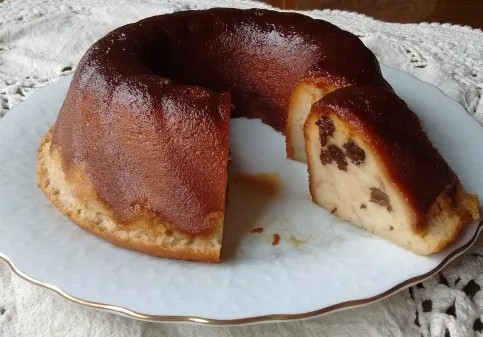

Budín de Pan

Ingredientes:
2 panes oreados (viejos)
1/2 litro de leche
3 huevos
1/2 taza azúcar
Vainilla
100g de dulce de membrillo
100g de dulce de batata
Pasas de uva a gusto
6 cucharadas de azúcar para el caramelo
Preparación:
Picar los panes en trozos chicos y remojarlos con la leche. Deshacer bien los trozos con un tenedor o pisapapas.
Agregar los huevos batidos y el azúcar, batir con batidor de varillas.
Añadir los dulces y las pasas de uva.
Hacer un caramelo con las 6 cucharadas de azúcar y con cuidado volcar en una budinera.
Hechar la mezcla de pan y llevar al horno dentro de una fuente con agua (baño María) por 45 minutos a 180°.
Si al introducir un cuchillo sale limpio está pronto.
© 2024 Mi Blog de Cocina. Todos los derechos reservados.